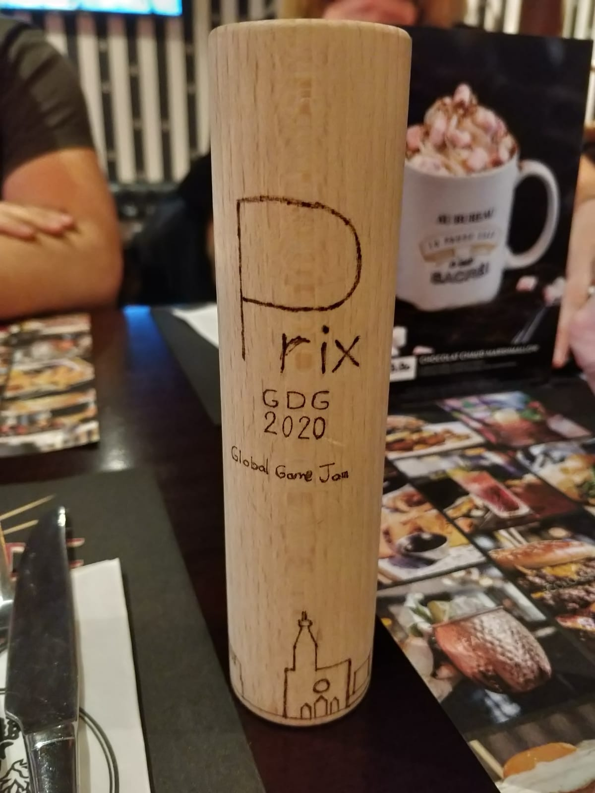

Global Game Jam 2020
L'événement Global Game Jam est l'un des derniers défis auxquels j'ai participé. Il a été d'une très grande importance dans mon parcours et ce pour plusieurs raisons:
- J'ai eu l'occasion de travailler avec une personne que j'ai rencontrée lors de l'événement.
- Notre équipe était très petite pour ce genre d'événements, nous n'étions que deux personnes et avions une charge de travail plus importante que le reste des équipes.
- J'ai dû apprendre à programmer sur une plateforme que je ne connaissais pas (microstudio) et dans un langage de programmation pratiquement nouveau.
- J'ai beaucoup appris sur le pixel art en quelques heures.
- J'ai dû programmer plusieurs étapes du jeu par moi-même:
- Introduction
- Musique
- Jeu
- Effets sonores
J'ai vécu une expérience incroyable au GGJ, j'ai rencontré de nombreuses personnes qui travaillent dans le domaine de la 3D et j'ai pu nouer de nombreux nouveaux contacts.
Nous avons remporté le prix du groupe Google Dev (voir photo). Et ce, parce que l'idée principale consistait à prendre soin de l'environnement.
Langue: Microstudio
